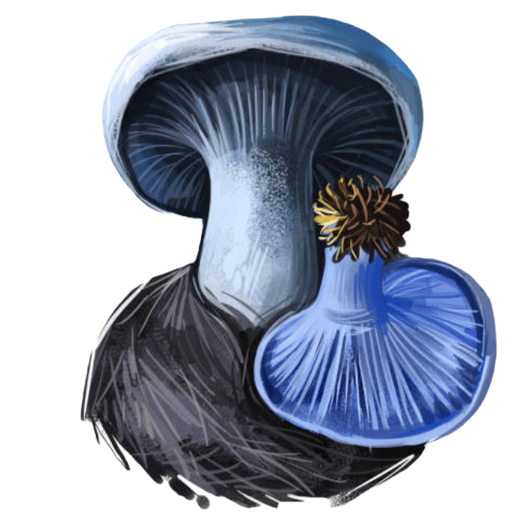
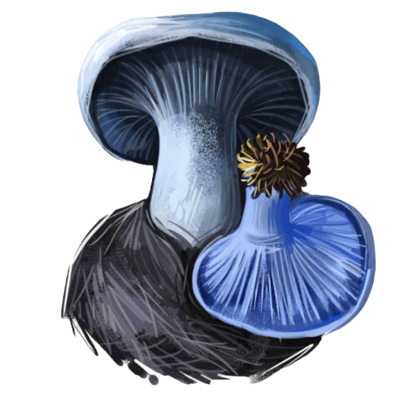
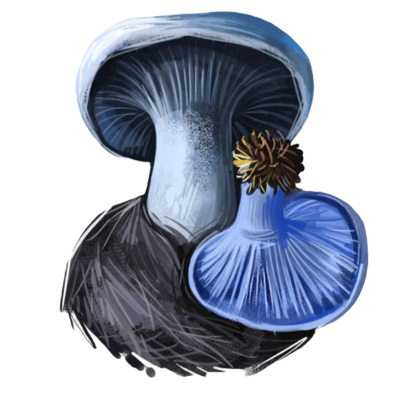
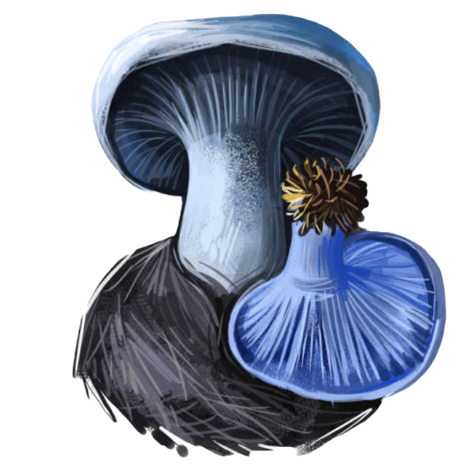
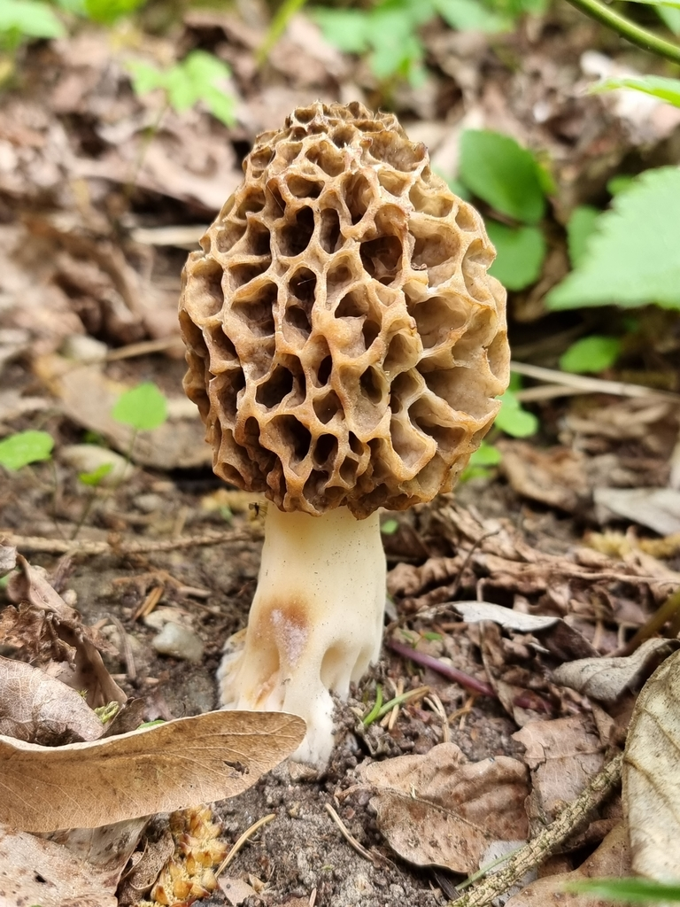

Amanita muscaria, también conocido como
matamoscas o falsa oronja, entre otros nombres,
un hongo basidiomiceto muy común y popular,
considerado venenoso y enteógeno, de distribución
cosmopolita del orden Agaricales.

Científico:Amanita muscaria
Clase:Agaricomycetes
División: Basidiomycota
Orden: Agaricales
Familia:Amanitaceae
Descripción: Detalle de las láminas de Amanita muscaria. Dos setas jóvenes (basidiocarpos) de A. muscaria en el valle de Tus (Albacete). El píleo al desarrollarse y madurar cambia su forma: primero globoso, luego hemisférico, después convexo y finalmente plano-convexo, en algunos casos cóncavo. El cuerpo de fructificación (o basidiocarpo) de A. muscaria puede llegar a medir entre 10 y 20 cm de altura.El píleo o sombrero presenta entre 7 cm y 25 cm de diámetro; y posee una cutícula de color rojo escarlata que vira hacia naranja con la maduración. Sobre la cutícula se pueden encontrar numerosos restos de velo universal de color blanco en forma de "puntos blancos". Su textura es carnosa, consistente y de aspecto atractivo. El margen es incurvado y ligeramente estriado en la madurez. El estipe o pie es cilíndrico, fácilmente separable del sombrero, de color blanco con un ligero tono de amarillo claro, es recto, su tamaño varía desde los 12 a 20 cm de altura y de 1 a 3 cm de diámetro. Presenta un anillo amplio membranoso y con el borde ligeramente teñido de amarillo (producto de la ruptura del velo secundario). La base del pie es claviforme, rodeado de una volva (resto del velo universal). La superficie interior del sombrero llamada himenio aparece recubierta por láminas, generalmente blancas, independientes, ventrudas y desiguales. Las esporas son blancas y ovoides. Es posible confundir A. muscaria con Amanita caesarea (oronja), Amanita crocea y especies rojas o rojizas del género Russula.
Desarrollo:
Este hongo presenta un desarrollo hemiangiocarpico, el hongo primigenio se encuentra rodeado de un velo universal, que se romperá con el desarrollo del hongo, dejando restos en el pie formando la volva, y en el pileo o sombrero formando los "puntos blancos" que se ven sobre el mismo. Además en el desarrollo del hongo presenta un velo secundario el cual protege al himenio, cuando el himenio madura este velo secundario se rompe y sus restos quedan formando el anillo.
Morchella, conocidas como colmenillas,
cagarrias, morillas o múrgoles, son
hongos ascomicetos comestibles,
caracterizados por poseer ascocarpos
de aspecto reticulado. Son muy apreciadas
por los gourmets franceses y españoles.
Nombre científico: Morchella esculenta
Clase: Pezizomycetes
División: Ascomycota
Orden: Pezizales
Familia: Morchellaceae
Características: Sombrero de color ocre amarillento uniforme, la mayor parte de las veces de forma globosa, aunque puede ser también ovoide. Puede superar los 10 cm de altura y está formado por alvéolos muy amplios, dispuestos de manera un tanto desordenada, sin seguir una pauta concreta. Es hueco y tiene el margen inferior soldado al pie. Borde flexuoso. Himenio que como en las demás especies de su género, está inmerso en el interior de las cavidades alveolares, siendo los bordes exteriores estériles. Pie generalmente blanquecino, ocasionalmente algo ocráceo, hueco como el sombrero. La base suele estar surcada, siendo el resto liso y algo pruinoso. Carne frágil y quebradiza, de olor destacable, fuerte aunque no desagradable. Sin embargo su sabor es suave.

Hábitat:
Es una de las colmenillas más habituales, crece en primavera generalmente en las orillas de los ríos, junto a árboles de ribera como el fresno o el olmo.
Lactarius indigo es una especie de hongo comestible
de la familia Russulaceae.
Su cuerpo fructífero presenta colores que
van desde el azul oscuro en especímenes frescos
al gris azulado
pálido en los más viejos.
Nombre científico: Lactarius indigo
Clase: Agaricomycetes
División: Basidiomycota
Orden: Russulales
Familia: Russulaceae
Características: Sombrero de tamaño similar a los níscalos, en su máximo crecimiento puede alcanzar los 15 cm de diámetro, siendo lo más habitual encontrarlos entre 5 y 10 cm. De forma convexa en su nacimiento, pronto plana y umbilicada, para finalmente adoptar una forma de embudo con una fuerte depresión central. Superficie no separable de color azul añil en los ejemplares jóvenes, se va decolorando con la edad hacia tonos azul pálidos con matices grisáceos. Posee zonas concéntricas de un azul más intenso, y su borde es bastante regular e involuto en los ejemplares jóvenes. Láminas adnatas o ligeramente decurrentes de color azul añil, algo grisáceas de viejas, frecuentemente manchadas de azul intenso por el látex o de verde cuando este se seca. Son apretadas y con laminillas. Pie Lleno y macizo de joven, luego cavernoso, corto o de tamaño proporcionado al sombrero, está ensanchado junto al sombrero y algo más atenuado en la base, casi radicante, escrobiculado y concoloro. Carne Blanquecina o grisáceo pálido, manchada de azul sobre todo hacia el margen. Exuda un látex de color azul que al secarse adopta tonos verdosos. Olor fúngico fuerte y sabor dulce no acre.
Hábitat:
Esta seta forma micorriza con pinos y robles, creciendo sobre todo durante el otoño. No tenemos constancia de su existencia en el continente europeo.

Cargando...